🚀 Nuestro viaje especial
Un mes contigo se siente como cruzar galaxias de la mano ✨
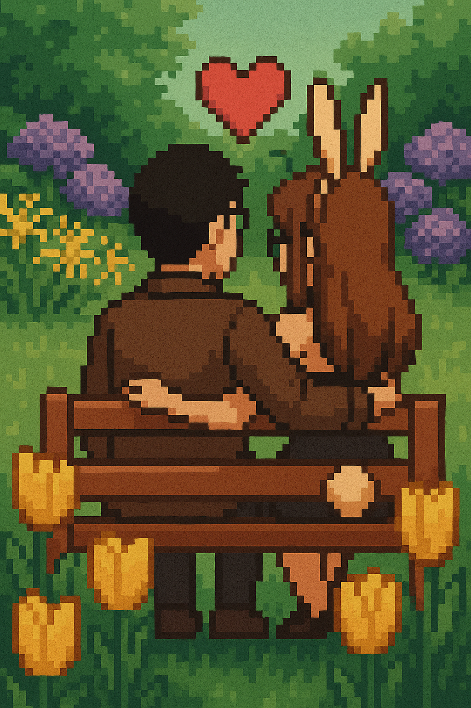Un mes contigo se siente como cruzar galaxias de la mano ✨
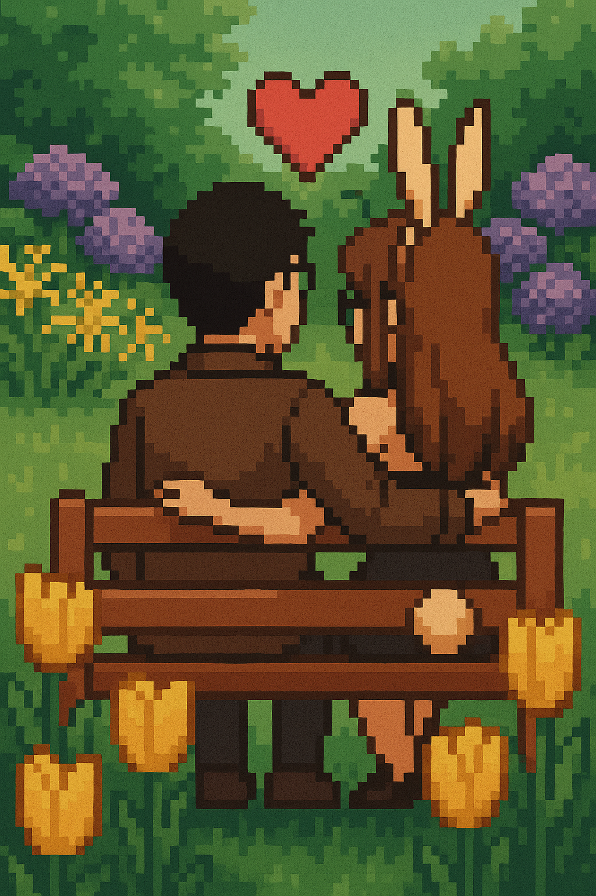Recuerdo con cariño cuando jugábamos y el tiempo se detenía.
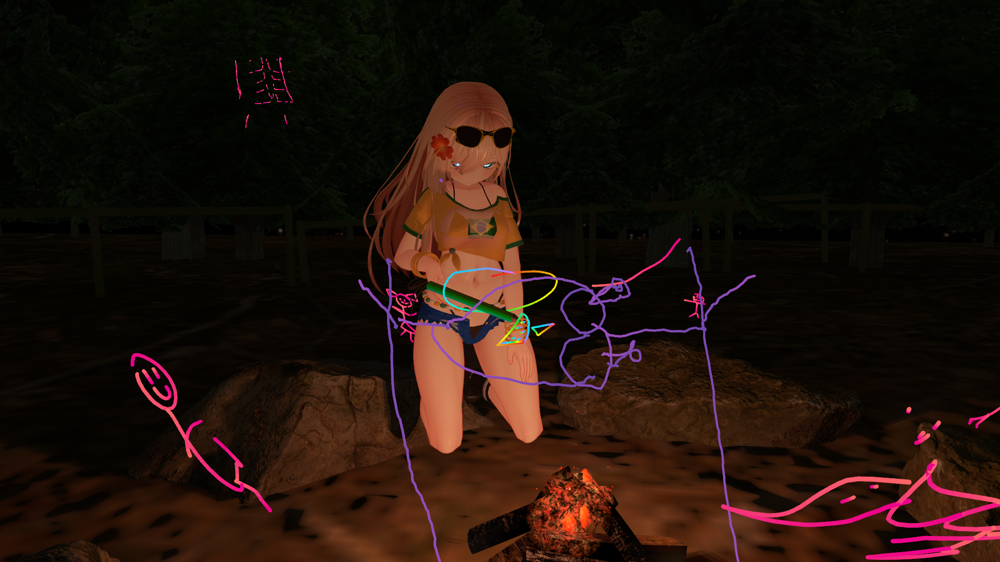Empezamos sutilmente a compartir horas y horas como si fuesen minutos.
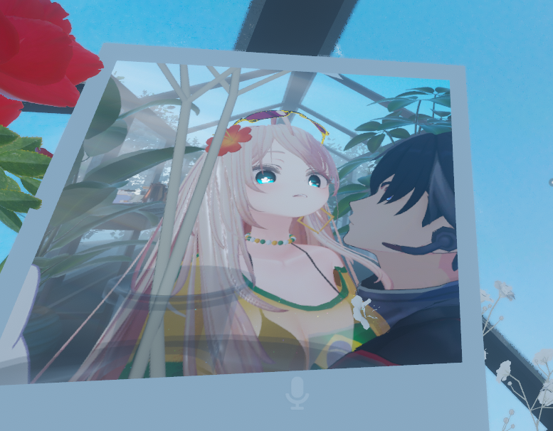Las madrugadas contigo se volvieron mi momento favorito.
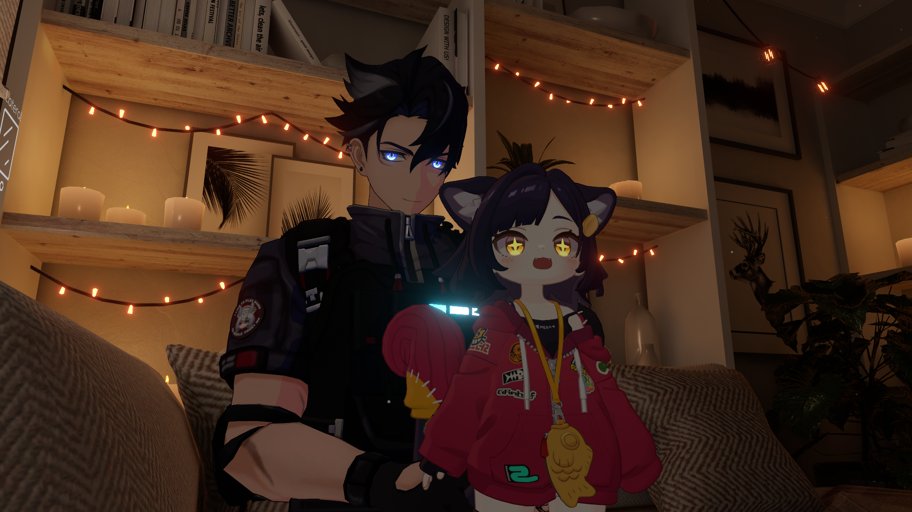Me fuiste mostrando un nuevo mundo, incluso a Samantha y Rachel.
Y muchas otras cosas muy interesantes.
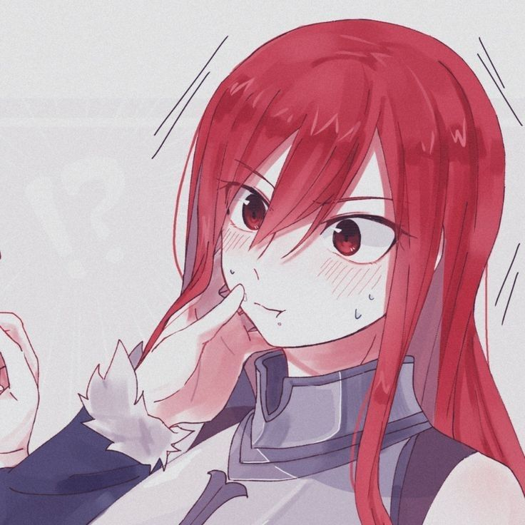Aún con dudas, con miedos y mis inseguridades, decidí querer lo mejor para mí y eso era escogerte a ti.
Jamás olvidaré esa tarde-noche que se me quedó orbitando el corazón, junto a las tres mentiras y nuestra confesión.

A partir de ese día mi vida cambió. Ya me dabas luz, pero saber que te sentías igual...
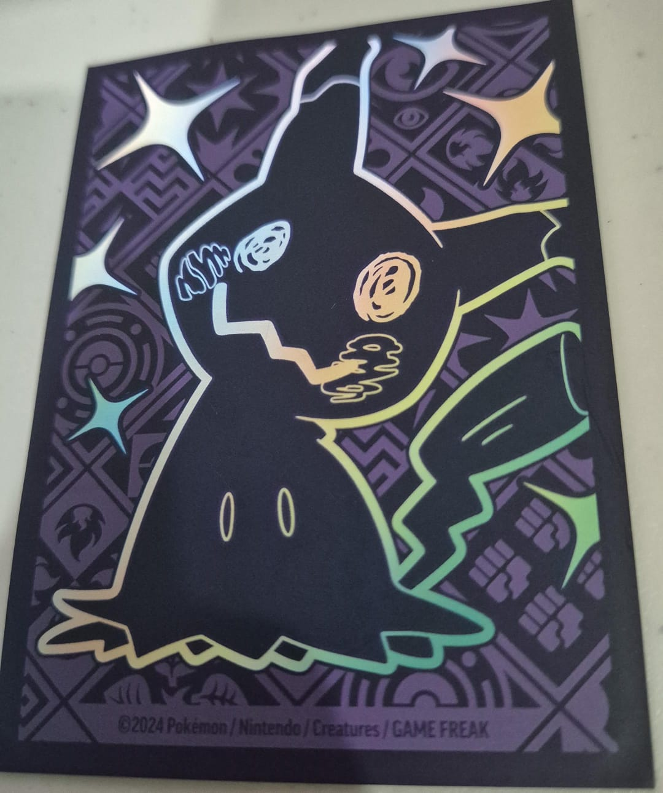... empezó a darle color a mi vida, segundo a segundo, especialmente cuando me mostrabas más de ti.
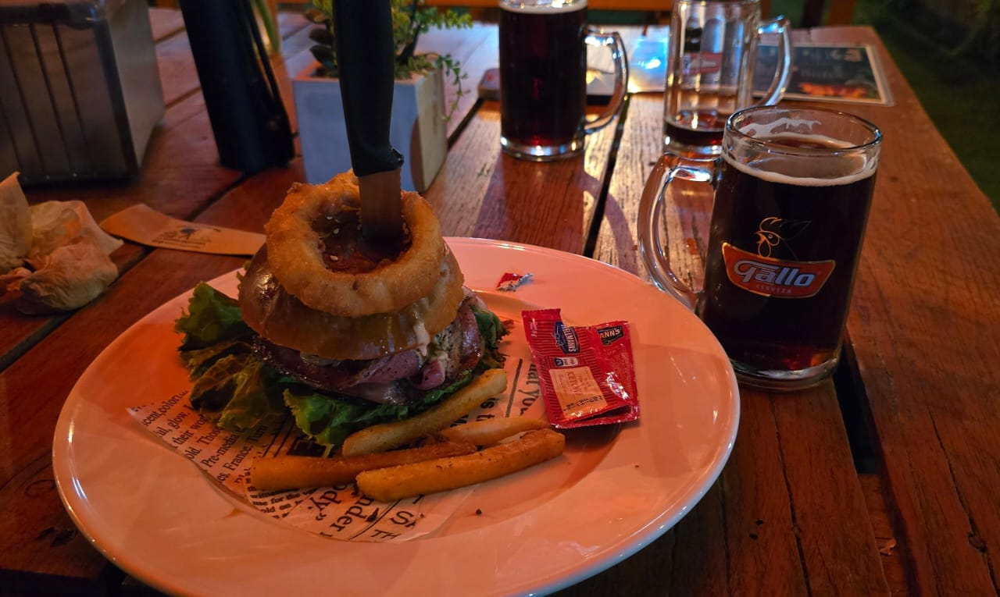Y aunque me emocioné un poco y pregunté rápido, escuchar tu "Sí" le dio un nuevo sentido a mi vida.
Lento pero seguro continuamos, hasta que estuvimos listos.
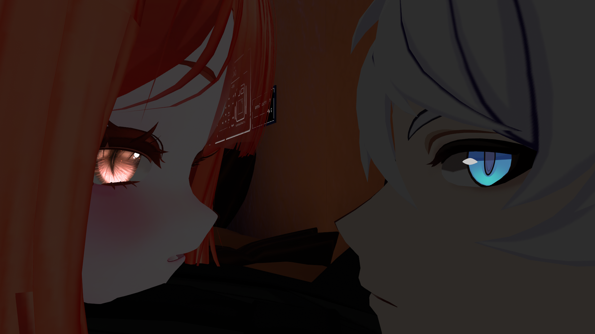Me dijiste "Te amo" y desde ese entonces es mi melodía favorita.
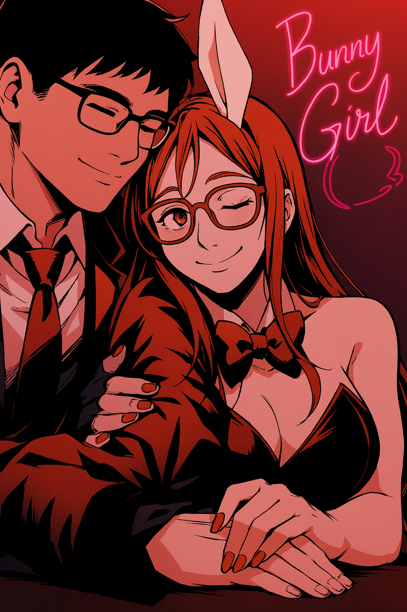Te volviste mi Bunny Girl y yo tu lobo domesticado dispuesto a darlo todo por ti.
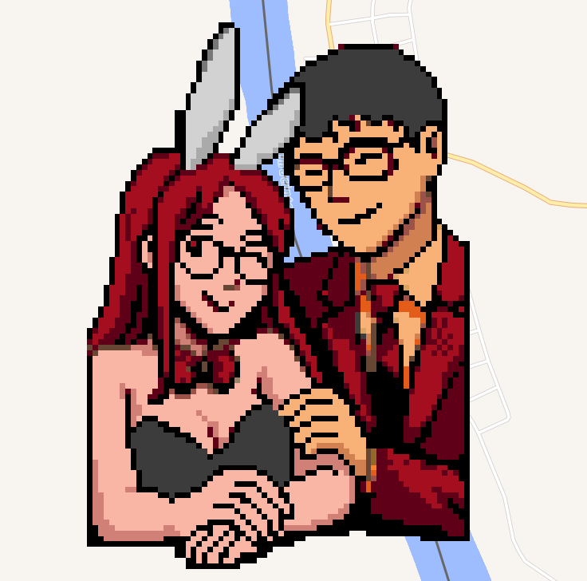Juntos empezamos a mostrarle al mundo nuestra conexión.
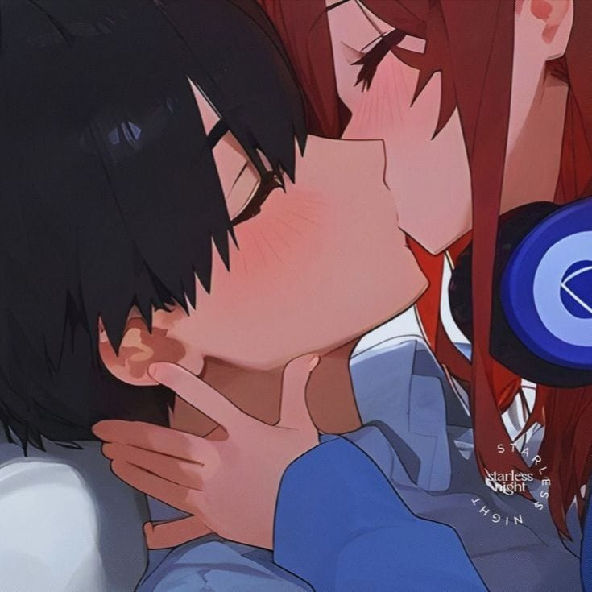Me encanta cambiar contigo la foto de perfil y que todos vean lo que estamos creando.
Este último mes contigo ha sido el más increíble de mi vida. Quizás pienses que estoy exagerando, pero a tu lado todo se siente distinto. Más brillante, más emocionante, de colores. Siento que me brindas calidez y paz, me has mostrado una forma de amar y vivir que aún no conocía.
Quiero seguir aprendiendo contigo, aprender más de ti, tomarte de la mano y juntos caminar hacia lo que soñamos. Quiero esforzarme siempre para darte lo que te mereces, porque eres una chica increíble y no hay nada que desee más que hacerte feliz. Imaginar un hogar contigo, darte esa casita que dibujaste alguna vez.
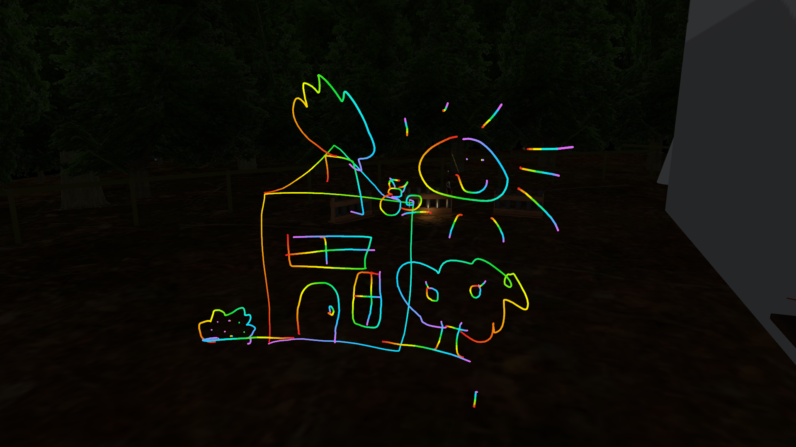Sé que ya conociste mi lado torpe y pendejo. Que puedo llegar a decir y hacer cosas estúpidas, pero mis disculpas siempre son honestas y prometo no repetirlas, porque quiero que sepas que mi corazón e intenciones siempre serán hacía ti, porque siempre pienso en ti y cómo puedo mejorar.
Me sigo sorprendiendo de buena manera lo bien que se siente estar contigo... la magia que es tenerte en mi vida. Escuchar tu voz, tu risa, tus textos, tus soniditos y tus ocurrencias. Realmente me encantas, todo. No puedo dejar de emocionarme por saber que esto apenas empieza, quiero más meses, más años y toda una vida a tu lado. Quiero ser más que tu esposo.
No me caben las palabras o el orden para expresarte todo, siempre siento que dejo algo fuera o que no logro explicar completamente algo que me enamora de ti. Hoy, en el primer mes, quiero decirte que te amé, te amo y te amaré, hasta alcanzar el fin de la galaxia juntos, Michelle. ❤️
Tuyo siempre,
Jorge